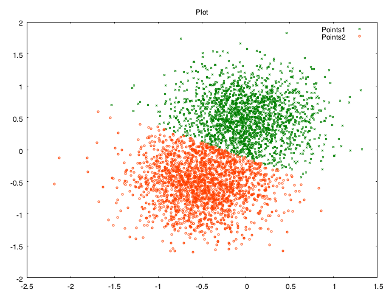

Rustで機械学習
Posted on November 14, 2017
最近、仕事ではじめる機械学習という本を読んでいる。現場感が伝わるように書いてあって、以前より機械学習に興味が沸いた。
ところで、最近勉強中のRustで機械学習系のライブラリはあるのか、気になったのでちょっと調べた。
Rustで機械学習
調べた感じだと以下のrusty-machineというのが汎用的に使えそうだった。
錆びた機械というネーミングがかっこいい。
READMEを見る限り、以下に対応しているようだ。
- 線形回帰
- ロジスティック回帰
- 一般線形モデル
- k-meansクラスタリング
- ニューラルネットワーク
- ガウス過程回帰
- サポートベクターマシン(SVM)
- ナイーブベイズ
- DBSCAN
- k近傍法
残念ながら、自分にはまだこれらの手法について正しく解説できる自信がないので、説明は省く。
使ってみる
今回はexampleにあるコードを使って、k-meansクラスタリングとそのプロットまでやった。
プロットするのに、今回は RustGnuplot を使った。プロット系ライブラリは他にも以下のようなものがあるようだ。
まずはexampleのコードをそのままコピペして動かしてみる
参考: k-means_generating_cluster.rs
$ cargo run
Finished dev [unoptimized + debuginfo] target(s) in 0.0 secs
Running `target/debug/mlrs` # <- mlrsというパッケージ名にした
K-Means clustering example:
Generating 2000 samples from each centroids:
⎡-0.5 -0.5⎤
⎣ 0 0.5⎦
Training the model...
Model Centroids:
⎡-0.505 -0.536⎤
⎣ 0.015 0.539⎦
Classifying the samples...
Samples closest to first centroid: 1990
Samples closest to second centroid: 2010ちゃんと動く。
次にRustGnuplotを導入する
predictした後、classesの値に従って、samplesを分ける
let mut first_rows: Matrix<f64> = Matrix::new(0, 2, vec![]);
let mut second_rows: Matrix<f64> = Matrix::new(0, 2, vec![]);
for (i, x) in samples.iter_rows().enumerate() {
if classes.data()[i] == 0 {
first_rows = first_rows.vcat(&Matrix::new(1, 2, x));
} else {
second_rows = second_rows.vcat(&Matrix::new(1, 2, x));
}
}pngに描画する
let mut fg = Figure::new();
let xs1 = first_rows.select_cols(&[0]).into_vec();
let ys1 = first_rows.select_cols(&[1]).into_vec();
let xs2 = second_rows.select_cols(&[0]).into_vec();
let ys2 = second_rows.select_cols(&[1]).into_vec();
fg.axes2d()
.points(xs1, ys1, &[Caption("Points1"), PointSymbol('x'), Color("#008000"), PointSize(0.5)])
.points(xs2, ys2, &[Caption("Points2"), PointSymbol('o'), Color("#ff4000"), PointSize(0.5)])
.set_title("Plot", &[]);
fg.set_terminal("pngcairo", "/tmp/fg1.png");
fg.show();すると、以下のような図がプロットできた。

コード全体は こちらのGist に置いた。
まとめ
今回は軽くrusty-machineの例を動かした。図へのプロットも行った。
まだまだ機械学習については知識がないので、これからもう少し高度なことができるようになったらまたブログを書く。